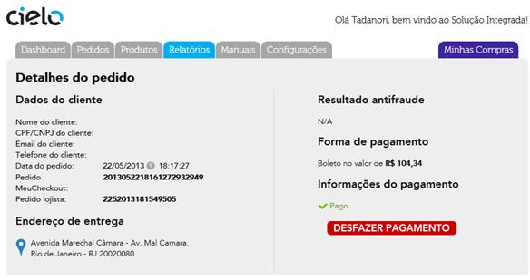
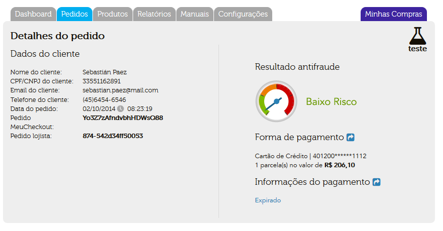
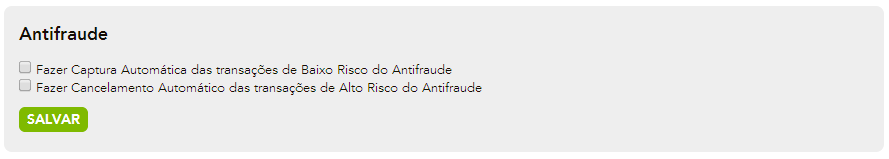

Orientações gerais
Após a integração com o Checkout estar concluída, processos funcionais farão parte do cotidiano da loja, como a verificação e acompanhamento das movimentações financeiras ocorridas. Veja a seção sobre o BackOffice do Checkout Cielo, que contém orientações para o lojista sobre como vender com o Checkout Cielo, descrevendo as funcionalidades, os métodos a serem utilizados, listando informações necessarias e provendo exemplos.
Botão Comprar
Integração via Botão é um método de compra usada sempre que não houver um “carrinho de compras” em sua loja ou quando se deseja associar uma compra rápida direta a um produto, como uma promoção numa homepage pulando a etapa do carrinho.
A integração via botão também pode ser usada para enviar um e-mail marketing, ou uma cobrança via e-mail, ou seja, adicionando o botão (HTML) referente ao produto/serviço a ser comprado/pago. Ou sempre que desejar disponibilizar uma venda rápida.
Para utilizar este recurso, é necessário cadastrar o produto que deseja vender, suas informações, e depois simplesmente copiar o código fonte gerado para este botão. A inclusão dos produtos é feita dentro do Backoffice, no menu de Produtos/Cadastrar Produto.
Características do Botão
- Cada botão gerado serve somente para um determinado produto.
- O preço do produto não pode ser alterado na tela de Checkout
- Não é necessário o desenvolvimento de um carrinho
- O cadastro do produto é obrigatório para a criação do botão.
Cada botão possui um código único que só permite comprar aquele determinado produto nas condições de preço e frete cadastrado. Portanto, um fraudador não consegue alterar nenhuma destas informações na hora de submeter à compra, pois o Checkout Cielo vai buscar todos os dados do produto no cadastro do Backoffice, e valerão os dados do cadastro.
Boleto
Todo boleto gerado (emitido) aparece com o status de “PENDENTE” no Relatório de Pedidos. Sua troca de status vai depender de ações manuais do proprio lojista.
Possiveis Status do Boleto
- PENDENTE – boleto emitido pelo processo de transação. Status continua até alteração manual pelo lojista.
- PAGO – Status usado quando o botão “Conciliar” é ativado pelo lojista. Esse status pode ser revertido para pendente utiliando o Botão “Desfazer conciliação”.
- EXPIRADO – Status ativo após 10 dias da criação do boleto, caso esse não tenha sito conciliado nesse periodo. Boletos com status “EXPIRADO” podem ser conciliados.
Conciliando um Boleto
Cabe ao lojista através de uma Conciliação Manual com seu extrato bancário, confirmar o pagamento do mesmo.

Para realizar a Conciliação você deve:
- Acessar o relatório de pedidos no Backoffice;
- Filtrar os pedidos por Meio de Pagamento “Boleto” e status “PENDENTE” e identificar o boleto em questão pelo Valor;
- Clicar no sinal de + no final da linha para acessar a página de “Detalhes”;
- Clicar no botão de “ Confirmar Pagamento ” e informar a data de pagamento, para seu futuro controle;
O pedido passa para status PAGO.
O Comprador também verá o pedido como PAGO no “Backoffice do Comprador”
Desfazendo a conciliação (pagamento) de um Boleto. Caso a conciliação tenha sido feito errada, basta:
- Encontrar o Pedido;
- Entrar no seu detalhe e clicar no botão “Desfazer Pagamento”;
- O Pedido voltará para o Status de “PENDENTE”.
Boletos Expirados
Se o boleto não for conciliado dentro de um prazo de 10 dias após seu vencimento, seu Status será alterado para “EXPIRADO”, para um melhor controle dos boletos vencidos. Boletos EXPIRADOS podem ser conciliados.

Cartão de Crédito
O Checkout Cielo trabalha com diferentes bandeiras de crédito, como Visa, Mastercard, Diners, Amex e Elo.

Recebendo uma Venda de Cartão de Crédito
Pedidos por meio de cartão de crédito serão incluídos no Backoffice como “AUTORIZADO” ou “NÃO AUTORIZADO”, dependendo do resultado da autorização na Cielo. Caso haja algum problema no processamento deste pedido (consumidor fechou a tela, por exemplo), ele constará como “NÃO FINALIZADO”.
Análise de Fraude
Pedidos “AUTORIZADOS” serão enviados online, ainda no ato da venda, para ferramenta de Antifraude da Cybersource para análise. O resultado desta análise será traduzido no campo “Indicação AF” no Relatório de Pedido, para cada pedido.
Esta análise indicará um “BAIXO RISCO” ou “ALTO RISCO” para a venda em questão. Esta sugestão é o que deve guiar a decisão de se confirmar a venda ou não. A analise será apresentada no “Detalhes do Pedido”, como abaixo:
[!Análise de risco(/images/checkout-cielo-analise-risco.png)
Captura/Cancelamento manual
Concluindo uma Venda (captura ou cancelamento)
As vendas “AUTORIZADAS” aguardam uma decisão de confirmação ou cancelamento. E esta decisão deve vir em conformidade com a análise de fraude.
A confirmação da venda deve ser feita pelo botão CAPTURAR no Detalhe do Pedido, e seu status mudará para “PAGO”. Esta venda será então confirmada (capturada) na Cielo.
E o cancelamento deve ser feito pelo botão CANCELAR no Detalhe do Pedido, e seu status mudará para “CANCELADO”. Esta venda será então cancelada (desfeita) na Cielo.
Captura Automática
As vendas “AUTORIZADAS”, e com “BAIXO RISCO” no antifraude serão CAPTURADAS automaticamente pelo sistema.
O status apresentado será “PAGO”. Esta venda será então confirmada (capturada) na Cielo.
Cancelamento Automático
As vendas “AUTORIZADAS”, e com “ALTO RISCO” no antifraude serão CANCELADAS automaticamente pelo sistema.
O status apresentado será “PAGO”. Esta venda será então cancelada (desfeita) na Cielo.

Estornando uma Venda
Caso a venda já tenha sido confirmada (status PAGO) ela pode ser ainda, futuramente, estornada. Para isso, basta clicar no botão no Detalhe do Pedido.
Diferença entre Cancelado e Estornado
- Cancelamento: é feito no mesmo dia da captura, devolvendo o limite ao cartão do comprador em até 72h conforme regras do banco emissor do cartão. Não é apresentado na fatura do comprador;
- Estorno: a partir do dia seguinte da captura, o valor é “devolvido” na fatura do comprador em até 120 dias. É apresentado na fatura do comprador.
Vendas de Cartões de Crédito Expiradas
Conforme o prazo de confirmação da venda autorizada se acabar, seu pedido passará automaticamente para o status “EXPIRADO”. Isso acontecerá no sexto dia após a data de autorização (data do venda).
Chargeback
Seu cliente pode por algum motivo cancelar a compra diretamente com o banco emissor de seu cartão de crédito. Caso isso ocorra você receberá da Cielo um aviso de Chargeback de “Não Reconhecimento de compra”. Ou caso tenha havido uma compra com cartão fraudado, você recebera um aviso de Chargeback por “Fraude”.
Essa comunicação não é feita via o backoffice do Checkout Cielo, mas sim pelo extrato da própria Cielo. Após esse recebimento, você pode entrar no Backoffice e sinalizar o pedido como tendo recebido um Chargeback, pra seu melhor controle. Basta entrar no Detalhe do Pedido e clicar no botão “ChargeBack”, e seu status passará a ser “CHARGEBACK”.

Débito Online
Pedidos vendidos por meio de Débito online serão incluídos no Backoffice como PENDENTE, PAGO, NÃO AUTORIZADO ou NÃO FINALIZADO, dependendo do resultado da autorização junto ao Banco.
- Pendente - Corresponde quando o comprador ao finalizar o pedido e não obtem resposta por parte do Banco, ou seja, não conseguir nem carregar a página do Banco para inserir os dados para o Débito.
- Pago - Corresponde quando o comprador conseguir realizar o pagamento do débito com sucesso.
- Não Autorizado - Apresentado para o Lojista quando o comprador tentar realizar uma transação via débito e não ter saldo para a transação.
- Não Finalizado - Apresentado para o Lojista caso o comprador tenha algum problema para finalizar o pagamento do meio Débito, seja fechando a janela do banco ou simplesmente nem chegando à tela do banco.